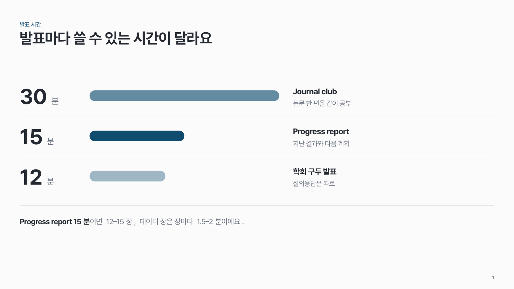
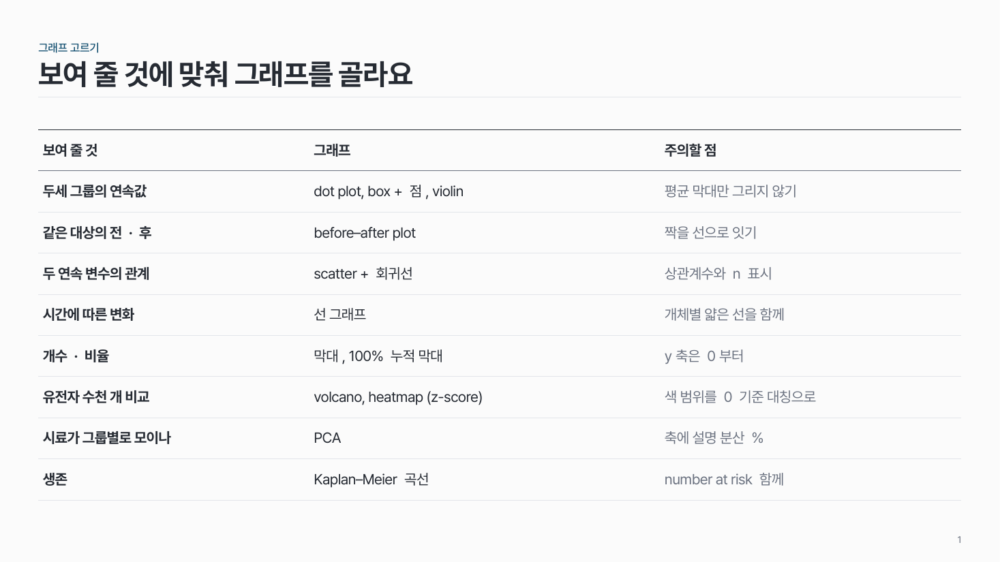
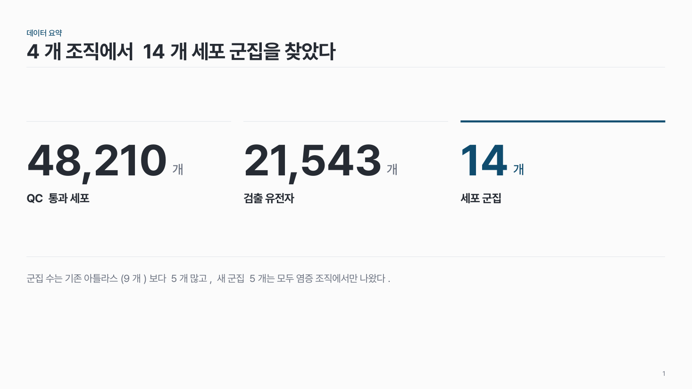
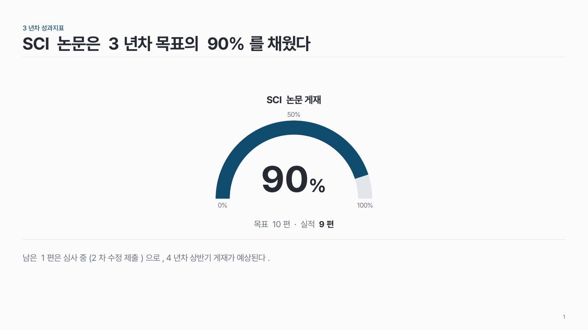
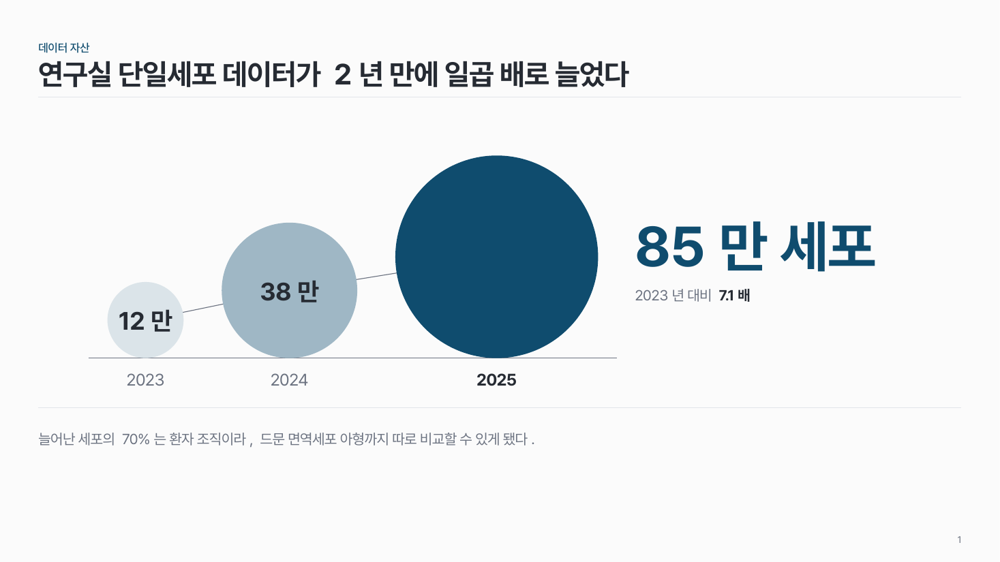

홈 › 숫자·표
숫자·표
숫자로 보여 주고 싶어요
이럴 때
예비 결과 그래프, 몇 개 안 되는 값의 비교, 연구비·성과지표·일정 같은 표처럼 숫자가 근거일 때예요.
들어가는 것
- 그래프면: 항목, 값(원문 그대로), 단위, 조건과 표본 수(n).
- 값이 3–5개뿐이면: 값, 단위, 이름, 짧은 설명.
- 표면: 머리행(단위 포함), 행, 필요하면 합계 행.
강조할 것
결론이 되는 막대·점·열 하나만 진한 주조색. 나머지는 회색이나 옅은 명도로 둬요. 핵심 수치는 그 옆에 크게 적어요.
고르는 법
팁
- 기본 차트를 그대로 쓰지 않아요. 제목·범례가 켜진 기본 스타일은 끄고, 격자선은 아주 옅게.
- 범례는 그래프에서 떨어뜨리지 말고, 선 끝이나 막대 옆에 바로 이름을 붙여요.
- 막대 그래프의 y축은 0부터. 연속값은 평균 막대만 그리지 말고 점을 모두 보여 줘요 (n이 작으면 특히).
- 표는 그림으로 붙이지 말고 다시 만들어요. 테두리는 지우고 가로선만, 머리행 위 1pt 짙은 선.
- 표의 할 말은 표 위에 한 줄로. 강조 열은 빨간 테두리 대신 옅은 색 면으로.
추천 패턴

그래프 한 장 data-02
그래프 하나를 크게. 핵심 막대·점 하나만 주조색, 나머지는 회색, 핵심 수치는 그 옆에 크게.

알약 막대 data-04
같은 시작점에서 값에 비례한 알약 모양 가로 막대. 값은 왼쪽에 크게, 핵심 막대 하나만 주조색.

표 data-07
가로선만 있는 표. 머리행 위에 짙은 선, 할 말은 표 위에 한 줄, 강조 열은 옅은 색 면.

큰 숫자 data-01
숫자 자체가 주장일 때 핵심 수치 2–4개를 크게. 핵심 숫자 하나만 주조색.

버블 비율 data-03
값 3–5개를 원 면적으로. 바닥을 맞추고 핵심 원 하나만 진하게.

반원 게이지 data-05
목표 대비 달성률 하나를 반원 아치로. 가운데 큰 숫자, 아래 목표 · 실적 한 줄.

증가 원 data-06
같은 지표를 시점마다 원 면적으로. 원끼리 가는 선으로 잇고, 마지막 값을 오른쪽에 크게.